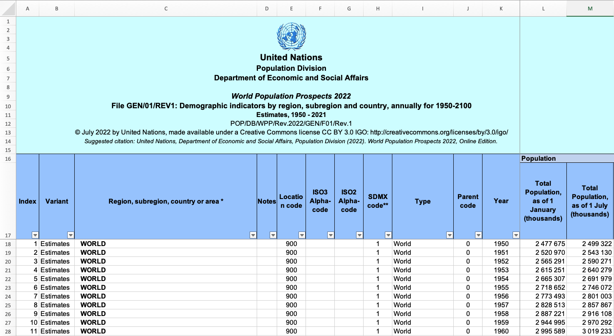
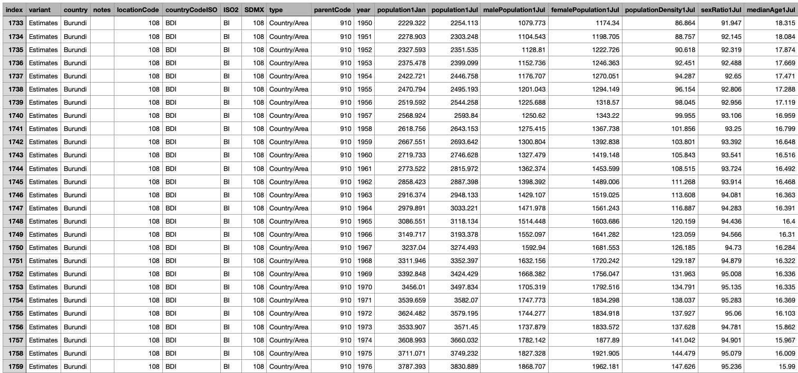
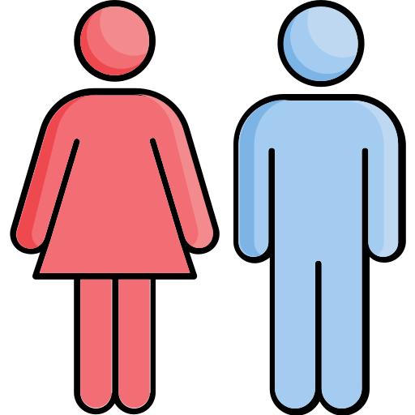

Projektinformationen
In einer Welt voller Wandel, in welcher demographische Trends sich stetig
ändern, ist es wichtiger denn je, ein umfassendes Verständnis für
demographische Entwicklungen zu entwickeln. In diesem Zusammenhang ist das
Weltbevölkerungs-Dashboard ein wichtiges Werkzeug, um die umfangreichen
Daten in einer zugänglichen und interaktiven Art und Weise darzustellen.
Es bietet nicht nur einen detaillierten Überblick über aktuelle und
historische Bevölkerungsdaten, sondern auch Einblicke in Geburten- und
Sterberaten sowie Migrationsbewegungen.
Die Entwicklung eines solchen Dashboards ermöglicht es der breiten
Öffentlichkeit, sich über die demografische Entwicklung in verschiedenen
Regionen der Welt zu informieren und ein besseres Verständnis für globale
Veränderungen zu erlangen. Ausserdem trägt es dazu bei, das Bewusstsein
für wichtige Themen wie Überbevölkerung, Urbanisierung und die
Auswirkungen des demografischen Wandels auf die Umwelt zu schärfen.
Skizze
Die Skizze des Dashboards zielt darauf ab, eine intuitive und
benutzerfreundliche Oberfläche zu schaffen, die es ermöglicht,
verschiedene Datenpunkte zu erkunden und zu vergleichen. Interaktive
Karten, Diagramme und Zeitleisten ermöglichen es den Nutzern, in die Daten
einzutauchen und ihre eigenen Schlüsse aus den Trends zu ziehen. Das
Dashboard ist nicht nur ein Werkzeug zur Visualisierung von Daten, sondern
auch ein Instrument, das einen Beitrag zum Verständnis unserer sich
ständig verändernden Welt leistet.

Daten
Datenquelle
Unser Projekt verwendet die Daten der Abteilung für Wirtschaftliche und Soziale Angelegenheiten der Vereinten Nationen. Der Datensatz stammt aus:
https://population.un.org/wpp/Download/Standard/MostUsed/
Beschreibung des Datensatzes
Der verwendete Datensatz trägt die Bezeichnung "WPP2022_GEN_F01_DEMOGRAPHIC_INDICATORS_COMPACT_REV1". Er enthält verschiedene demographische Kennzahlen, die einen detaillierten Überblick über die globale Bevölkerungsentwicklung geben. Der Datensatz enthält Informationen über Aspekte wie Bevölkerungsgrösse, Wachstumsraten, Geschlechterverteilung, Fertilitätsraten, Lebenserwartung und weitere Informationen.
Datenaufbereitung
Der Datensatz wurde im Format .xlsx heruntergeladen. Zuerst musste diese Datei angepasst werden. Die ersten 15 Zeilen der Excel-Mappe wurden gelöscht, da diese nicht für das Projekt relevant waren. Zudem musste die Formatierung der ersten 11 Spalten entfernt werden, so dass die Daten nicht durchmischt werden, sobald die Datei formatiert wird.

Im Anschluss an die Formatierung wurden die überflüssigen Excel-Blätter gelöscht und die für das Projekt relevanten Daten in eine Tabelle umgewandelt.
Um Probleme mit den Tabellenüberschriften zu vermeiden, mussten diese in sinnvolle Bezeichnungen umbenannt werden.

Zuletzt exportierten wir die Datei in eine .csv-Datei, um sie mit Hilfe von d3.js einlesen und für die Visualisierungen verwenden zu können.
Visualization
&DAVI& Untertitel
&DAVI& Hierhin kommt der komplette D3 Code (kann natürlich auch mit
externen script gemacht werden, aber hier hat er auch Platz) Beispiel:
0
0%

0
0%
Total Population
0
Design
Grundlagen des visuellen Designs
Unsere Datenvisualisierung zeichnet sich durch eine sorgfältige Auswahl visueller Elemente aus, um komplexe Informationen zugänglich zu machen. Die interaktive Weltkarte bildet die Bevölkerungsentwicklung aller Länder von 1950 bis 2021 ab. Zusätzlich integrieren wir aussagekräftige Balken- und Liniendiagramme, um die Daten in verschiedenen Dimensionen darzustellen. Pie Charts wurden verwendet, um eine klare Aussage über alle Länder zu treffen. Die Weltkarte bietet sowohl die Ansicht der Bevölkerungsanzahl als auch die der Bevölkerungsdichte.
Grundprinzipien des analytischen Designs (Tufte)
Die Gestaltung orientiert sich an den Grundsätzen von Edward Tufte, insbesondere an der effektiven Präsentation von Daten. Klare Linienführung und minimale Ablenkungen ermöglichen es den Betrachtern, sich auf die wesentlichen Informationen zu konzentrieren, sei es auf der Weltkarte, im Balkendiagramm, im Liniendiagramm oder in den Pie Charts.
Daten-Ink Ratio (Tufte)
Ein zentrales Anliegen ist die Optimierung der Daten-Ink Ratio. Jeder grafische Bestandteil auf der Karte und in den Diagrammen dient einem klaren Zweck und trägt dazu bei, komplexe Bevölkerungsinformationen präzise zu vermitteln.
- Ein Land auf der Weltkarte erscheint mit einem dunkleren Farbton je höher die Bevölkerungsanzahl/-dichte ist.
Menschliche Wahrnehmung
Die Farbpalette und Anordnung der Elemente berücksichtigen die Prinzipien der menschlichen Wahrnehmung. Kontraste und Farbgebung wurden gezielt gewählt, um die Lesbarkeit zu verbessern und eine effiziente Informationsvermittlung zu ermöglichen.
- Gender Weiblich/Männlich erscheinen als Rot/Blau
- Klare Unterscheidung der Farbtöne in den Pies
Aufgaben in der Datenvisualisierung
Die Visualisierung unterstützt verschiedene Aufgaben, darunter das Erkunden von Bevölkerungszahlen nach Ländern und Jahren. Zusätzlich ermöglicht sie die Analyse der Geschlechtsverteilung sowie den Vergleich von Geburten- und Todeszahlen in den Top 5 Ländern. Das Balkendiagramm gibt einen detaillierten Einblick in die Bevölkerungsentwicklung (Anzahl und Dichte), während das Liniendiagramm Migrationsdaten über die Jahre hinweg verdeutlicht.
Interaktionskonzept
Durch die einfache Bedienung eines Zeitreglers können Benutzer mühelos zwischen den Jahren navigieren. Die Verknüpfung von Elementen ermöglicht es, in den Line Chart zu zoomen und detaillierte Einblicke in Migrationsdaten zu gewinnen. Die Nutzer können auch den Balken- und Liniendiagrammen interaktiv erkunden, um tiefergehende Erkenntnisse zu gewinnen.
Quellen
Datenquelle
Unser Datensatz stammt von der Website der Vereinten Nationen. Dieser Datensatz ist eine umfassende und zuverlässige Quelle für demographische Kennzahlen weltweit.
https://population.un.org/wpp/Download/Standard/MostUsed/
Vorlagen und Design
Für die Gestaltung unserer Webseite verwendeten wir die Vorlage aus dem Modul DAVI_HS23 der Hochschule Luzern.
https://elearning.hslu.ch/ilias/goto.php?target=file_6015673_download&client_id=hslu
Programmierunterstützung
Für die Programmierung und die Datenanalyse erhielten wir Unterstützung von ChatGPT4 von OpenAI. Diese Plattform hat uns bei der Programmierung, der Fehlersuche und der Optimierung unserer Algorithmen wertvolle Hilfe geleistet.
https://chat.openai.com/
Medienquellen
Alle verwendeten Bilder stammen von Pexels, einer Website für lizenzfreie Medien.
https://www.pexels.com/de-de/
Datenvisualisierung
Für die Erstellung der Skizze für unsere Datenvisualisierungen wurde Tableau Desktop verwendet.
https://www.tableau.com/de-de/products/desktop
Team
Gus Delhees
gus.delhees@stud.hslu.ch
Mischa Matthias Rieder
mischa.rieder@stud.hslu.ch